Babatone
Malawi · Musical instruments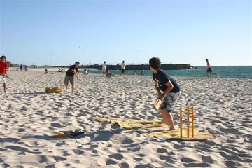

Badgir windcatcher cooling puzzle
Iran · Crafts and making

Bagatelle
France +1 · Dexterity and skill gamesBahamian dominoes
Bahamas · Board and table games
Bahamian Straw Plaiting
Bahamas · Crafts and makingBaibalaa
Maldives · Street and playground games

Balafon Gourd Xylophone
Mali +2 · Musical instrumentsPlay preview · in the Drum Music of the World app

Balanta Mangrove Rice Polder
Guinea-Bissau · Board and table games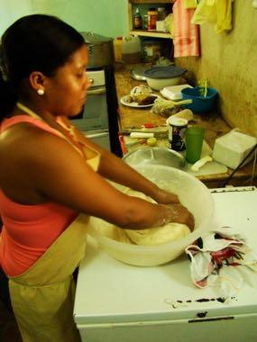
Baleada Stand
Honduras · Crafts and making
Balle pelote
Belgium · Street and playground games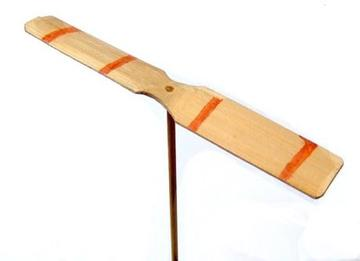

Bamboo scaffold builder
China · Crafts and making
Bamileke beadwork designer
Cameroon · Crafts and making
Bamum script writer
Cameroon · Crafts and making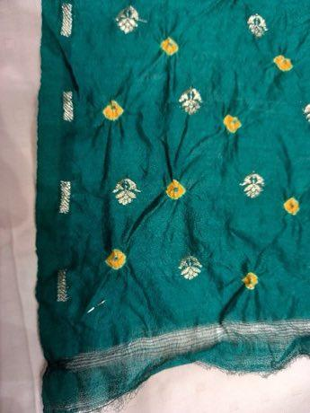
Bandhani tie-dye
India · Crafts and makingBandoneon and tango rhythm
Argentina +1 · Musical instrumentsPlay preview · in the Drum Music of the World app
Banig mat weaving
Philippines · Crafts and making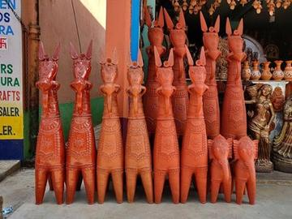
Bankura terracotta horse
Bangladesh · Crafts and making
Banqi
China +1 · Board and table games
Bansuri bamboo flute
India +1 · Musical instrumentsPlay preview · in the Music & Dance of the World app

Bashi
Maldives · Street and playground games
Basotho blanket pattern designer
Lesotho · Crafts and making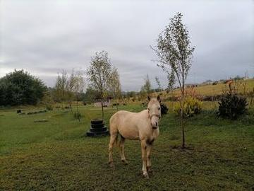
Basotho pony mountain race
Lesotho · Racing
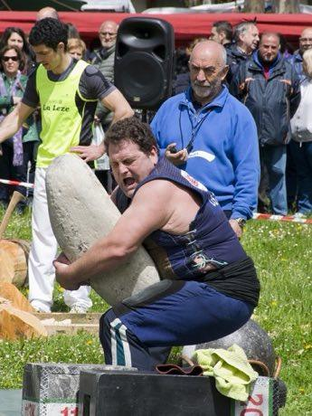
Basque stone lifting
France · Acrobatics and strength
Bat and Trap
United Kingdom · Dexterity and skill games
Batik wax-resist pattern studio
Indonesia +1 · Crafts and makingPlay preview · in the Textile Crafts of the World appBatu Seremban / Five stones
Singapore · Dexterity and skill games
Batuque Cloth-Drum Circle
Cape Verde · Musical instruments
Bayt-bazi: verse chain
Iran · Performance and storytellingPlay preview · in the Story & Theatre of the World app

Bedouin Coffee Pour
Jordan · Crafts and making
Beehive Panel Painter
Slovenia · Crafts and making
Belarusian straw weaving
Belarus · Crafts and making
Bequia Boat and Model Builder
Saint Vincent and the Grenadines · Crafts and making

Bianzhong
China · Musical instruments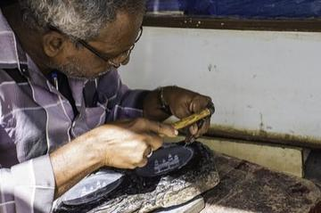
Bidriware silver inlay
Worldwide · Crafts and making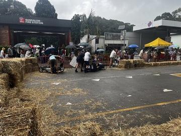
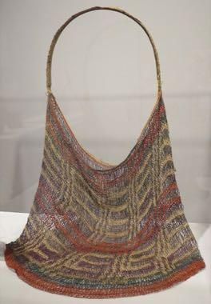
Bilum looped string bag
Papua New Guinea · Crafts and making
Bingo
Canada · Board and table games
Black Forest Cuckoo Clock Workshop
Germany · Crafts and making
Blacksmith's Forge
United Kingdom +4 · Crafts and makingBlada
Kenya · Dexterity and skill gamesBlind hen
Nicaragua · Other traditions


Blue-and-white porcelain painting
Worldwide · Crafts and making
Bo Sang umbrella painting
Thailand · Crafts and making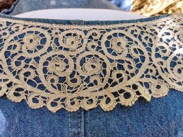
Bobbin lace making
Belgium · Crafts and making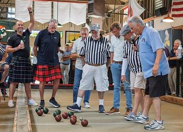
Boċċi
Malta · Street and playground games


Bojagi
South Korea · Crafts and making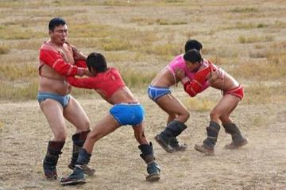
Bökh
Mongolia · Wrestling and martial sports

Bolesławiec Stamped Pottery
Poland · Crafts and making
Bolga Basket Weaver
Ghana · Crafts and makingBoli Khela
Bangladesh · Street and playground games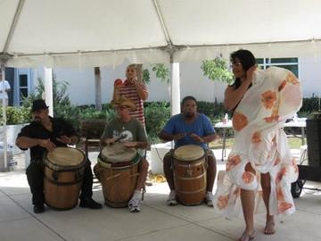
Bomba
Worldwide · Dances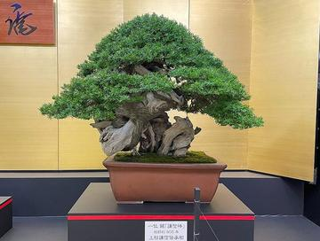
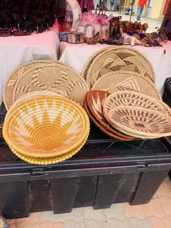
Botswana coil basket weaving
Worldwide · Crafts and making
Bottle Dance
Paraguay +1 · DancesBoules lyonnaises
France · Street and playground games
Bouzouki Strum
Greece · Musical instruments

Brännboll
Sweden · Street and playground games
Break the pot
Sri Lanka · Dexterity and skill games
Bridge Stick Race
United Kingdom · Toys
Buffalo race
Cambodia · Street and playground games
Buganda barkcloth making
Uganda · Crafts and making

Bulgarian Painted Pottery
Bulgaria · Crafts and makingBulundu
DR Congo · Street and playground games
Burmese lacquerware engraving
Myanmar · Crafts and makingBurn-out
Cuba · Street and playground games
Burundian drum ensemble
Burundi · Musical instruments

Buzuq Long-Neck Lute
Lebanon +2 · Musical instrumentsPlay preview · in the String Music of the World app